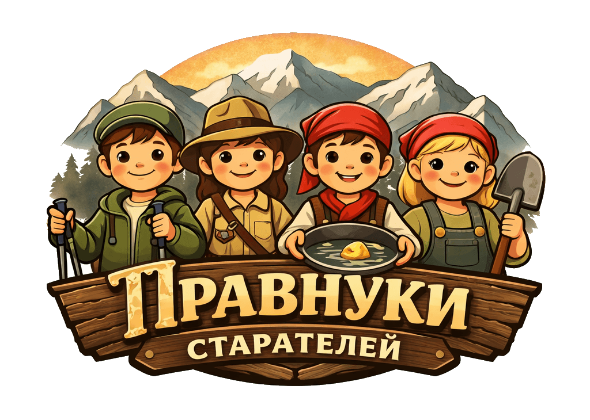

Интерактивная игра о старателях и уральских камнях.Поход на 53 километра вдоль реки Красный Адуй.
Игра лучше работает в горизонтальном положении. Поверните экран, и поле встанет ровно.
Текущая игра остановится. Если захотите играть ещё раз, нажмите «Начать игру».